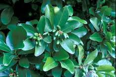

Laurier

Laurier de Nouvelle-Zélande, Laurier cerise, Laurier amande, Laurier aux crèmes, Laurier lait, Laurier des bois (Corynocarpus laevigatus ou Prunus laurocerasus de la famille des Rosacées)
Très toxique par ingestion.
Partie toxique pour les chats en général et le Korat en particulier :
Toute la plante mais surtout graines et feuilles.
Symptômes du processus pathologique :
Vertiges, immobilisation, sang et muqueuses rouge clair. Dans des cas extrêmes la mort survient en quelques secondes pratiquement sans symptômes préalables, Salivation dyspnée, respiration difficile, le rythme et la profondeur de la respiration sont perturbés : crampes, paralysies.
Origine de la toxicité (principe actif) :
Pour le laurier cerise : acide cyanhydrique, acide prussique.
Pour le laurier des bois : mézéréine.